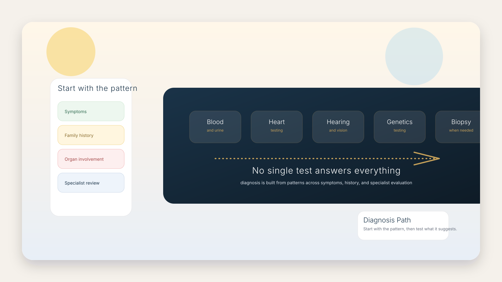

How Do You Find Out If You Have a Mitochondrial Disease?
There is usually no single test. Diagnosis is built from the pattern of symptoms, family history, specialist examination, and a mix of laboratory, imaging, genetic, and sometimes tissue testing.

Start with the pattern
Doctors usually begin by asking what is happening in daily life: fatigue, exercise intolerance, weakness, neurologic symptoms, vision or hearing changes, digestive issues, growth concerns, or symptoms across more than one body system.
They also look at family history, because mitochondrial disease can be inherited in different ways depending on the underlying cause.
To understand why those symptoms can spread across more than one system, it helps to read about ATP, the cell's main energy molecule, and mitochondrial dysfunction, which may appear before a formal disease diagnosis.
Tests doctors may use
Blood and urine studies may help look for metabolic clues.
Heart, hearing, and vision assessments may reveal multi-system involvement.
Genetic testing is often central when a hereditary condition is suspected.
In some cases, doctors may also use imaging or tissue studies such as muscle biopsy to clarify the diagnosis.
Why diagnosis can take time
Mitochondrial disease can be hard to diagnose because it may affect several systems at once, and early tests can sometimes look normal. People may see more than one specialist before the pattern becomes clear.
That is not a reason to panic. It is a reason to work with clinicians who understand metabolic or mitochondrial disorders and can interpret the whole picture.
What to remember
- A single blood test does not usually settle the question.
- Symptoms matter, but they need to be interpreted in context.
- Genetics often plays a major role, but not every case looks the same.
- Specialist evaluation is often the most useful next step.
Real human experience
For many people, the diagnostic journey is emotionally difficult because they know something is wrong, but they do not yet have a name for it. The uncertainty can last a long time, especially when symptoms are broad or fluctuate over time.
A clear diagnostic path helps turn that uncertainty into a plan.
Common questions
Can symptoms alone diagnose mitochondrial disease?
No. Symptoms can raise suspicion, but diagnosis usually requires testing and clinical evaluation.
Do all patients need a biopsy?
No. Biopsy is sometimes used, but not every case requires tissue testing.
Is genetic testing always enough?
Not always. Genetics is important, but doctors may also need metabolic, imaging, or organ-specific testing to interpret the full picture.
What should someone do if they suspect a problem?
They should seek evaluation from a qualified healthcare professional, ideally someone familiar with mitochondrial or metabolic disorders.
Related reading
Scientific disclaimer
Graphene far-infrared research is discussed in the separate research layer as an exploratory support topic, not as a diagnostic or curative claim. For that layer, see Does Far-Infrared Affect Mitochondria?